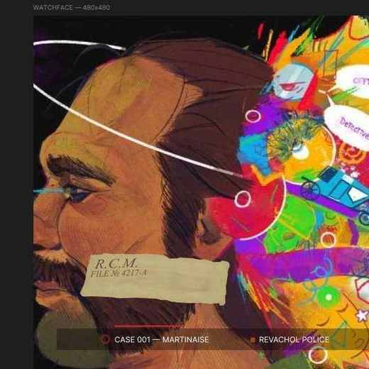

CASE 001 / WEARABLE INTERFACE
Циферблат Xiaomi Watch S5 в эстетике Disco Elysium
Визуальная концепция для круглого дисплея 480 × 480 px. Композиция в Figma и отдельная архивная метка, собранная в Krita, с учётом ограничений платформы.
Открыть кейс
Финальный макет в Figma · не фото часов